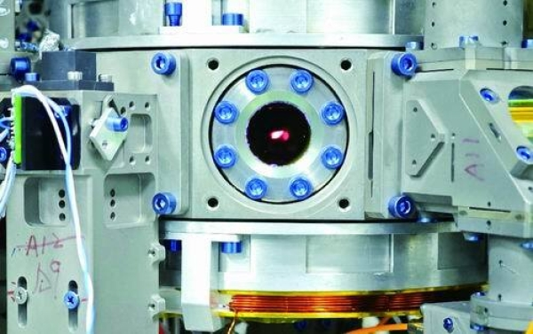

3 / 3科学突破·极端低温

中国空间站造出了最冷的东西
11月6日，中国科学院宣布：中国科学家在中国空间站里，把一小团铷原子冷却到了只比“温度最低线”高一点点的地方。
这是目前人类造出来的最冷的东西，比冬天最冷的冰还冷很多很多倍，科学家还能安安静静观察它整整7秒。
在这台“太空超级冰箱”里，原子们不再乱跑，会排成整整齐齐的队伍，帮科学家发现新的秘密。

11月6日，中国科学院宣布：中国科学家在中国空间站里，把一小团铷原子冷却到了只比“温度最低线”高一点点的地方。
这是目前人类造出来的最冷的东西，比冬天最冷的冰还冷很多很多倍，科学家还能安安静静观察它整整7秒。
在这台“太空超级冰箱”里，原子们不再乱跑，会排成整整齐齐的队伍，帮科学家发现新的秘密。
大家好！请看这张照片：这是一台很厉害的实验机器，空间站里也有一台和它一样的。11月6日，中国科学院宣布：中国科学家在中国空间站里，把一小团铷原子冷却到了只比“温度最低线”高一点点的地方。这是目前人类造出来的最冷的东西，比冬天最冷的冰还冷很多很多倍，科学家还能安安静静观察它整整7秒。在这台“太空超级冰箱”里，原子们不再乱跑，会排成整整齐齐的队伍，帮科学家发现新的秘密。你知道世界上最冷的地方是哪里吗？冰箱冷冻室和太空，哪个更冷？请两位小朋友来说一说。谢谢！